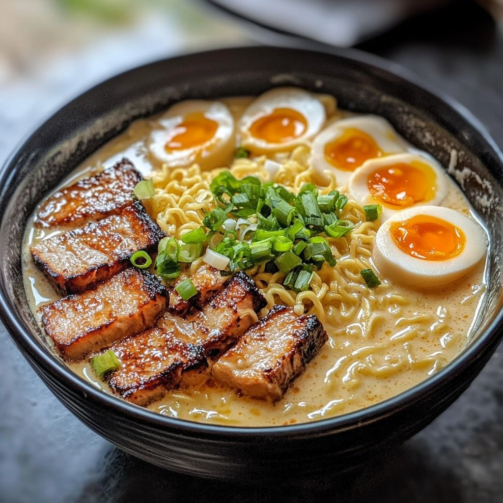
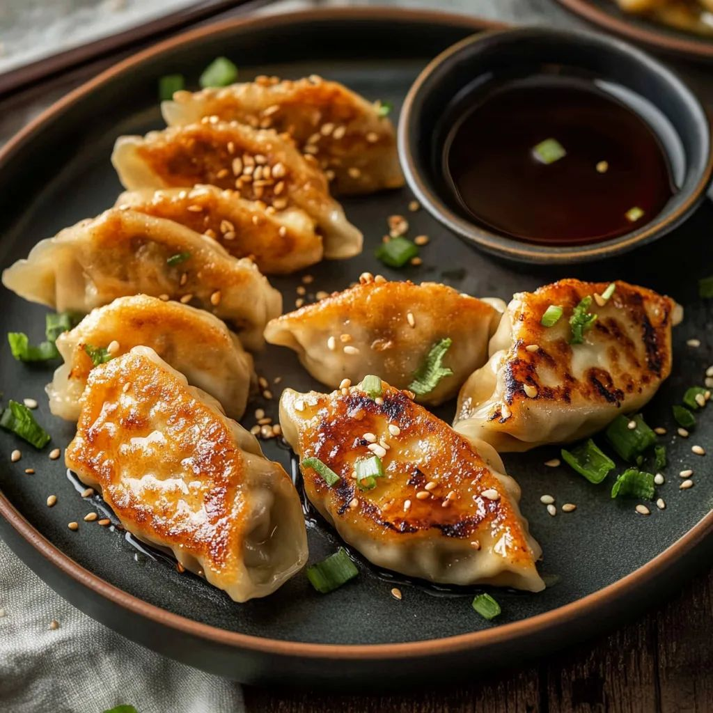
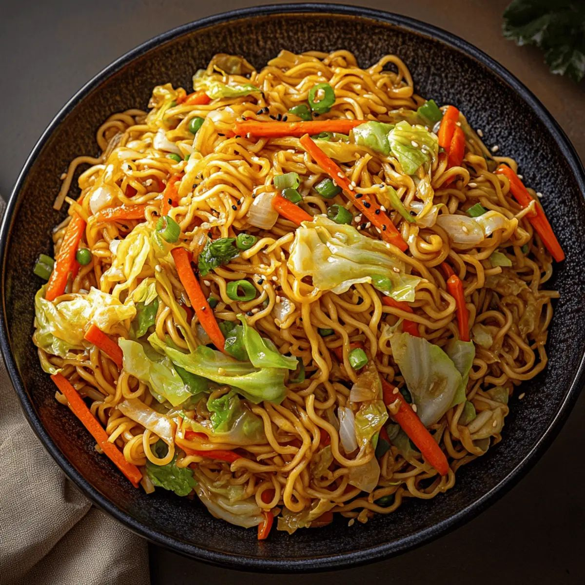
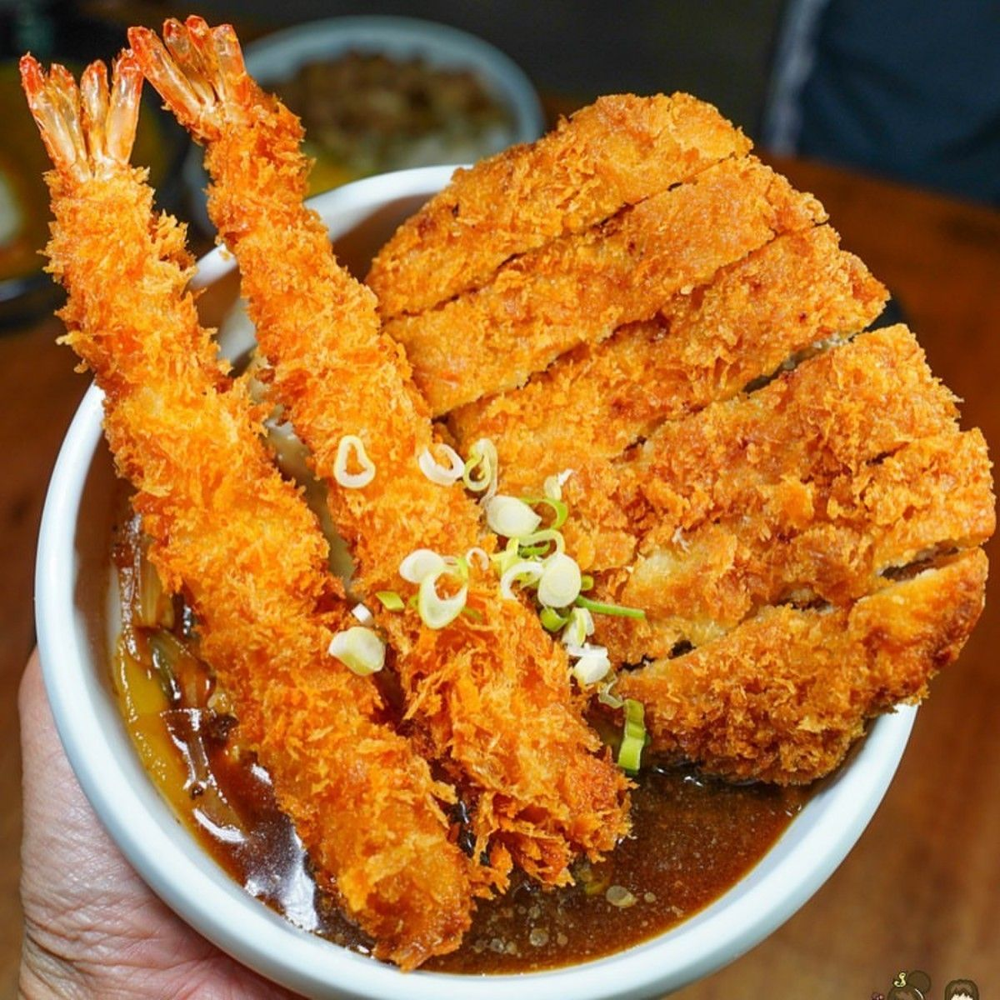
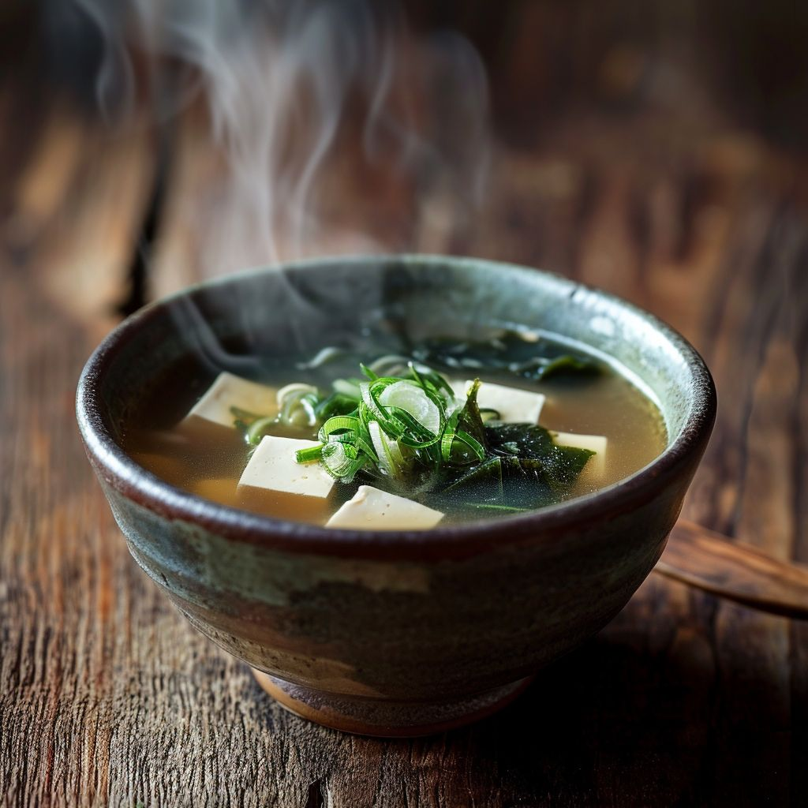
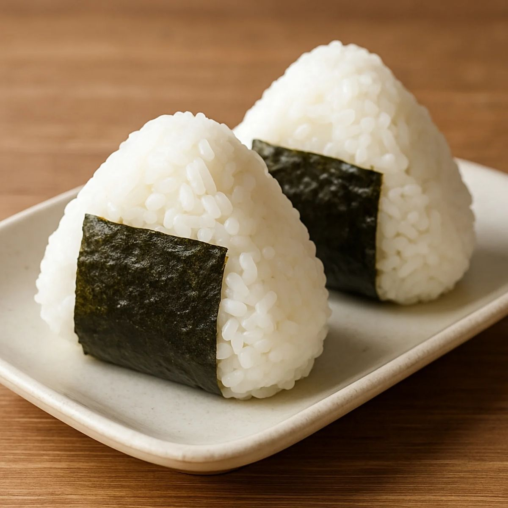
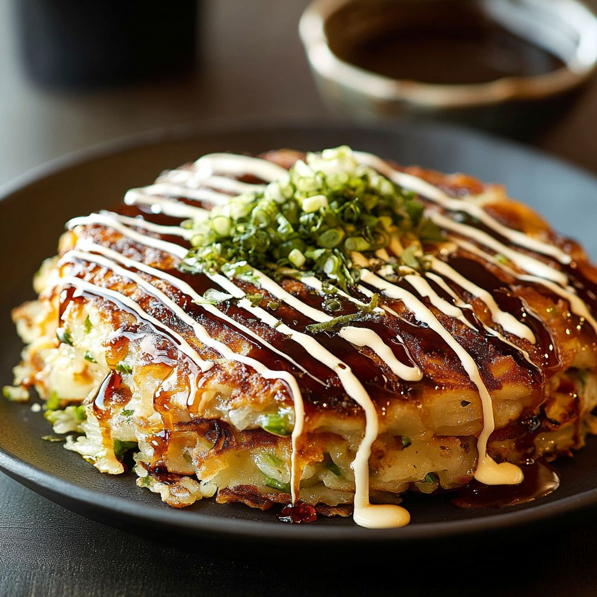
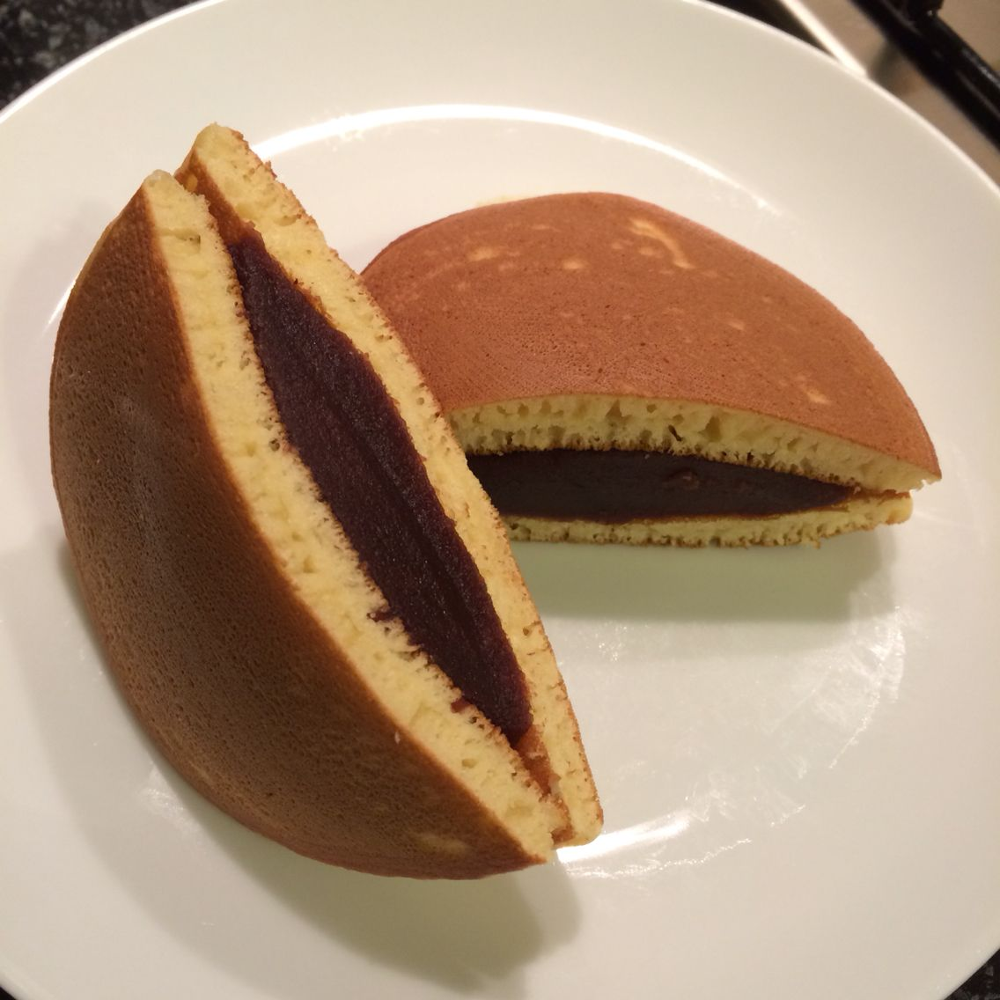

Cardápio Completo

Sushi
Prato feito com arroz temperado com vinagre, combinado com peixe cru, frutos do mar ou vegetais. Pode ser enrolado em alga (maki), moldado à mão com peixe por cima (nigiri) ou em outras variações.

Ramen
Sopa de macarrão servida em caldo quente, que pode ser à base de shoyu, missô ou carne de porco. Normalmente leva fatias de carne (como chashu), ovo cozido, algas, milho ou cebolinha.

Gyoza
São pasteizinhos recheados, geralmente feitos com massa fina de trigo. O recheio tradicional leva carne moída (normalmente porco), repolho, cebolinha, alho e gengibre. Costumam ser selados na frigideira e depois cozidos no vapor, ficando dourados por baixo.

Yakisoba
Macarrão frito na chapa com legumes (repolho, cenoura, brócolis) e carne, frango ou camarão. É temperado com molho à base de shoyu e outros condimentos, ficando levemente adocicado e salgado.

Tempura
Prato feito com legumes (como cenoura e batata-doce) e/ou frutos do mar (como camarão) mergulhados em uma massa leve à base de farinha e água gelada, depois fritos rapidamente. Fica bem crocante por fora e macio por dentro, geralmente servido com molho à base de shoyu.

Missoshiru
É uma sopa leve feita com caldo dashi (à base de peixe seco ou algas) e pasta de missô (fermentado de soja). Normalmente contém tofu em cubos, algas (como wakame) e cebolinha picada.

Onigiri
São bolinhos de arroz moldados geralmente em formato triangular ou oval. Feitos com arroz japonês cozido e levemente temperado. Podem ter recheios como salmão, atum com maionese, ameixa salgada (umeboshi) ou frango. Costumam ser envolvidos parcialmente com uma tira de alga nori.

Takoyaki
Bolinhas de massa feitas em uma chapa especial, recheadas com pedaços de polvo, gengibre e cebolinha. Depois de prontas, são cobertas com molho agridoce, maionese japonesa, alga em pó e flocos de peixe seco.

Okonomiyaki
É uma espécie de “panqueca salgada” japonesa. A massa leva farinha, ovos, repolho picado e água ou caldo. Pode incluir carne (como porco), frutos do mar ou vegetais. Depois de pronta, é coberta com molho agridoce específico, maionese japonesa, cebolinha e às vezes flocos de peixe seco.

Dorayaki
É um doce japonês feito com duas “panquecas” macias à base de farinha de trigo, ovos, açúcar e mel. O recheio tradicional é anko, uma pasta doce de feijão azuki. Algumas variações usam creme, chocolate ou frutas.